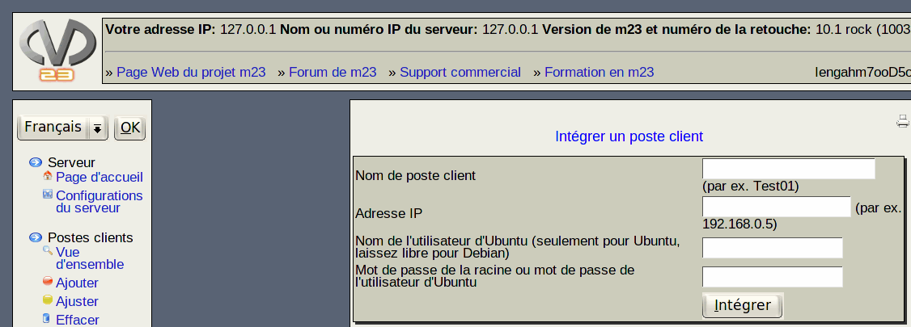

Avec m23, vous pouvez administrer des systèmes Debian préexistants dans votre parc en les intégrant à m23. Pour une intégration sans difficultés, le poste client doit obligatoirement être pleinement démarré et accessible par le réseau. Pour ce faire, seulement trois valeurs sont à saisir:
- Nom du poste client: Le nom sous lequel le poste client doit être reconnu donc administré par le serveur m23. Ce n'est pas nécessairement le nom d'hôte du poste client.
- Adresse IP: L'adresse IP (eventuellement temporaire) du poste client.
- Nom de l'utilisateur d'*Ubuntu (seulement pour *Ubuntu, laissez libre pour Debian): Le nom de du compte utilisateur, préexistant sur l'ordinateur à intégrer, pouvant être accédé par SSH. Ce compte devant être capable d'exécuter sur le poste client des commandes avec les privilèges superutilisateur (root) en utilisant sudo avec le même mot de pase. Cette option est uniquement nécessaire sur des systèmes Ubuntu ou lorsque la connexion avec les privilèges superutilisateur «root» est désactivée.
- Mot de passe du superutilisateur root ou mot de passe de l'utilisateur d'*Ubuntu: Mot de passe actuel du superutilisateur «root» sur le poste client (pour Debian) ou le mot de passe de l'utilisateur habilité à administrer le poste client (pour Ubuntu). Bien sûr, ce champs peut être laissé vide, si vous préférez une intégration manuelle.
Ensuite, cliquez sur «Intégrer». L'intégration se déroule en tâche de fond.
Sous-sections
root
2015-04-30